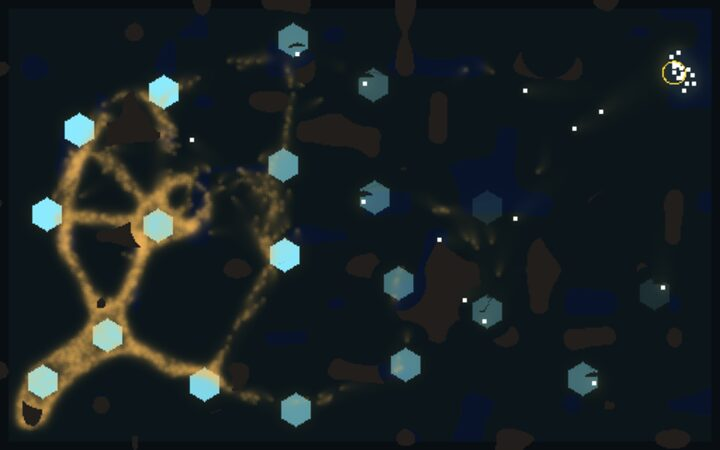
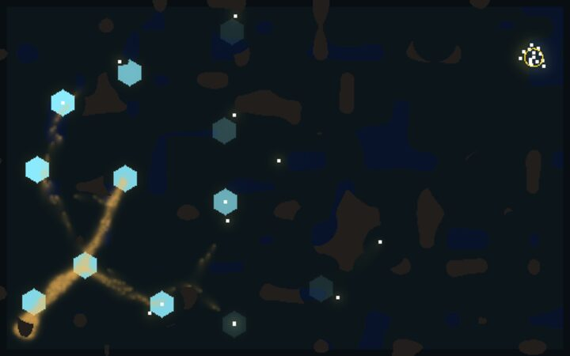
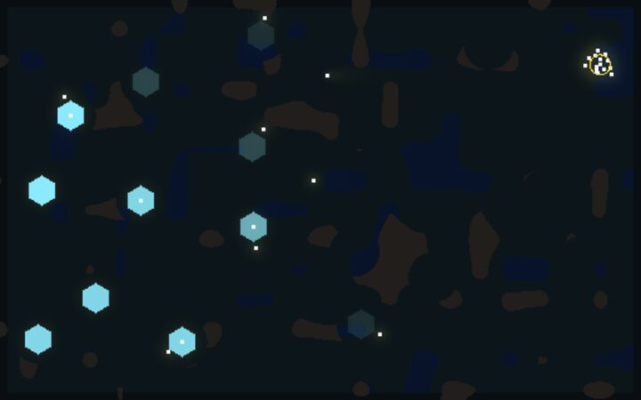
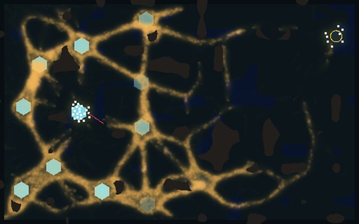
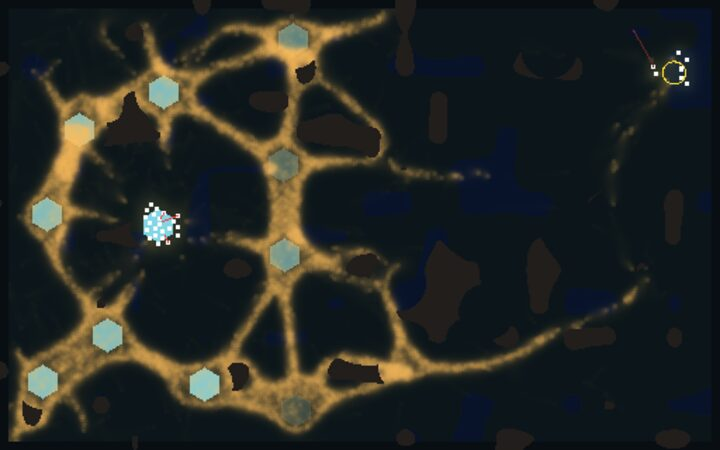
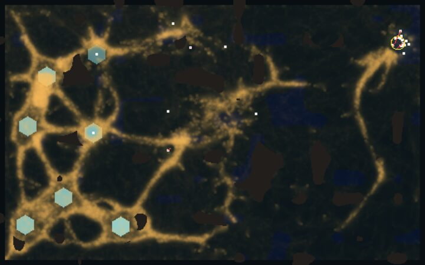
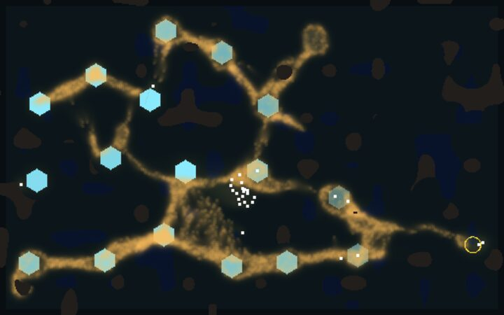
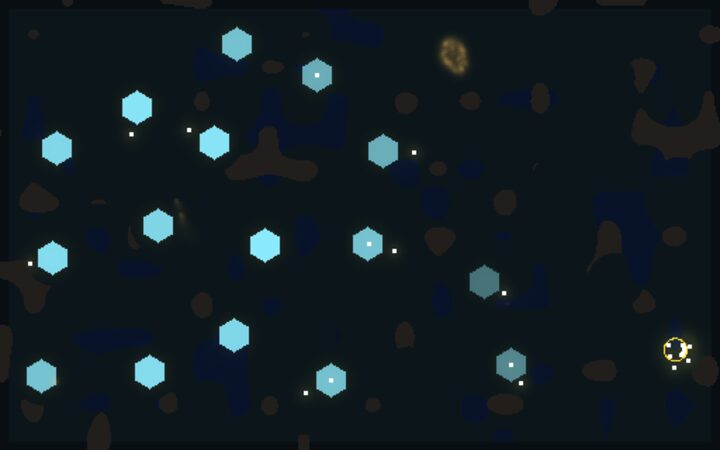

<title>Plan-by-Tier Matrix</title>
<meta name="claude:viewport-fit-sides" content="cover">
<link rel="stylesheet" href="https://fonts.googleapis.com/css2?family=IBM+Plex+Sans:wght@400;600&family=IBM+Plex+Mono:wght@400;500&display=swap">
<style>
/* Layout: one reading column; the matrix first, then each game as a strip of frames with its counts beside it. */
:root {
  --bg: #f3f5f4; --fg: #17201d; --muted: #5a6762; --line: #d3dbd8; --panel: #ffffff;
  --mould: #a0670f; --best: #e7f0ec; --best-fg: #0f5a44;
  --sans: "IBM Plex Sans", system-ui, sans-serif; --mono: "IBM Plex Mono", ui-monospace, monospace;
}
@media (prefers-color-scheme: dark) { :root:not([data-theme="light"]) {
  --bg: #0f1513; --fg: #e3ebe7; --muted: #94a39d; --line: #26312d; --panel: #161e1b;
  --mould: #e0a84a; --best: #18302a; --best-fg: #8fe0c4; color-scheme: dark } }
:root[data-theme="dark"] {
  --bg: #0f1513; --fg: #e3ebe7; --muted: #94a39d; --line: #26312d; --panel: #161e1b;
  --mould: #e0a84a; --best: #18302a; --best-fg: #8fe0c4; color-scheme: dark }
body { background: var(--bg); color: var(--fg); font-family: var(--sans); font-size: 15px; line-height: 1.55;
  padding-left: max(16px, env(safe-area-inset-left, 0px)); padding-right: max(16px, env(safe-area-inset-right, 0px)); padding-block: 28px 48px; }
main { max-width: 1040px; margin: 0 auto; display: grid; gap: 32px; }
h1 { font-size: 1.7rem; margin: 0; text-wrap: balance; }
h2 { font-size: 1.15rem; margin: 0 0 6px; text-wrap: balance; }
p { margin: 0; max-width: 68ch; }
ul { margin: 0; padding-left: 1.2em; max-width: 68ch; display: grid; gap: 6px; }
.lede { color: var(--muted); }
.game { display: grid; gap: 12px; padding-top: 20px; border-top: 1px solid var(--line); }
.frames { display: grid; grid-template-columns: repeat(auto-fit, minmax(220px, 1fr)); gap: 10px; }
figure { margin: 0; display: grid; gap: 4px; min-width: 0; }
figure img { width: 100%; height: auto; display: block; border-radius: 3px; }
figcaption { font-family: var(--mono); font-size: 12px; color: var(--muted); }
.counts { font-family: var(--mono); font-size: 13px; font-variant-numeric: tabular-nums; display: flex; flex-wrap: wrap; gap: 6px 18px; }
.counts b { color: var(--mould); font-weight: 500; }
.key { font-size: 13px; color: var(--muted); }
.tbl { overflow-x: auto; min-width: 0; }
table { border-collapse: collapse; font-family: var(--mono); font-size: 13px; font-variant-numeric: tabular-nums; }
th, td { text-align: right; padding: 6px 10px; border-bottom: 1px solid var(--line); white-space: nowrap; }
th:first-child, td:first-child { text-align: left; padding-left: 0; }
th { color: var(--muted); font-weight: 500; }
td small { display: block; color: var(--muted); font-size: 11px; }
td.best { background: var(--best); color: var(--best-fg); font-weight: 500; }
td.best small { color: var(--best-fg); }
td.note { text-align: left; color: var(--muted); font-family: var(--sans); white-space: normal; min-width: 14ch; }
</style>
<main>
  <header style="display:grid;gap:8px">
    <p class="key"><b>Pre-#113: before shot craters (#113) and core defence (#126). Don't balance off this table; it is re-run on main after #126.</b></p>
    <h1>Which plan beats which mould</h1>
    <p class="lede">Seven plans against eight mould types on the Larder race world (seeds 53-60, today's main before shot craters). The strike on the core is the best plan against seven of them. The Sporer is the one that flips it: the strike takes the core, but the spores have already left.</p>
    <p class="key">Each cell is the median score over 8 seeds, with the ends below it: mould wiped / time cap / squad wiped. A win scores above 1, and a stalemate at the cap scores about −0.4 to +0.5 (score v2: the charge taken and the mould's size). The shaded cell is the best plan for that mould by median. Eight seeds is a first look: no single cell survives a correction for the 57 comparisons.</p>
  </header>

  <section class="tbl">
    <h2>The matrix</h2>
    <table>
      <tr><th>Mould</th><th>idle</th><th>random</th><th>farm</th><th>boom</th><th>claim</th><th>fort</th><th>strike</th><th style="text-align:left">Best on seeds</th></tr>
      <tr><td>plain</td><td>−0.37<small>0/8/0</small></td><td>−1.40<small>0/2/6</small></td><td>+0.19<small>0/8/0</small></td><td>+0.22<small>1/7/0</small></td><td>+0.34<small>3/5/0</small></td><td>+0.22<small>1/7/0</small></td><td class="best">+2.08<small>5/3/0</small></td><td class="note">strike 5</td></tr>
      <tr><td>Sporer</td><td>−0.41<small>0/8/0</small></td><td>−1.70<small>1/2/5</small></td><td>+0.00<small>0/8/0</small></td><td>+0.10<small>1/7/0</small></td><td class="best">+0.17<small>1/7/0</small></td><td>+0.11<small>0/8/0</small></td><td>+0.09<small>1/7/0</small></td><td class="note">claim 5, fort 2, strike 0</td></tr>
      <tr><td>Sleeper</td><td>−0.16<small>0/8/0</small></td><td>−1.48<small>0/3/5</small></td><td>+0.30<small>0/8/0</small></td><td>+0.32<small>0/8/0</small></td><td>+0.48<small>0/8/0</small></td><td>+0.29<small>0/8/0</small></td><td class="best">+0.49<small>0/8/0</small></td><td class="note">strike 8</td></tr>
      <tr><td>Swarmer</td><td>−0.38<small>0/6/2</small></td><td>−1.64<small>0/2/6</small></td><td>+0.15<small>0/8/0</small></td><td>+0.18<small>1/7/0</small></td><td>+0.25<small>1/7/0</small></td><td>+0.19<small>1/7/0</small></td><td class="best">+2.18<small>6/2/0</small></td><td class="note">strike 7</td></tr>
      <tr><td>Drifter</td><td>−0.21<small>0/8/0</small></td><td>−0.73<small>0/4/4</small></td><td>+0.36<small>0/8/0</small></td><td>+0.43<small>0/8/0</small></td><td>+0.45<small>0/8/0</small></td><td>+0.42<small>0/8/0</small></td><td class="best">+2.31<small>8/0/0</small></td><td class="note">strike 8</td></tr>
      <tr><td>Sprawler</td><td>−0.88<small>0/4/4</small></td><td>−1.60<small>1/1/6</small></td><td>+0.20<small>1/7/0</small></td><td>+0.10<small>1/7/0</small></td><td>+0.14<small>1/7/0</small></td><td>+0.08<small>1/7/0</small></td><td class="best">+0.42<small>3/5/0</small></td><td class="note">strike 5, farm 3</td></tr>
      <tr><td>Trunk</td><td>−0.26<small>0/8/0</small></td><td>+0.02<small>2/3/3</small></td><td>+0.32<small>0/8/0</small></td><td>+0.29<small>0/8/0</small></td><td>+0.36<small>2/6/0</small></td><td>+0.30<small>0/8/0</small></td><td class="best">+2.21<small>7/1/0</small></td><td class="note">strike 7</td></tr>
      <tr><td>Grudge</td><td>−0.37<small>0/8/0</small></td><td>−1.70<small>0/2/6</small></td><td>+0.14<small>0/8/0</small></td><td>−0.01<small>0/8/0</small></td><td>−0.02<small>0/5/3</small></td><td>+0.00<small>0/8/0</small></td><td class="best">+0.18<small>1/7/0</small></td><td class="note">strike 5, farm 2</td></tr>
    </table>
  </section>

  <section style="display:grid;gap:8px">
    <h2>What it says</h2>
    <ul>
      <li><b>The rush on the core wins almost everywhere.</b> Since shots became free, a squad of 30 that keeps 8 farming always has fire. It wipes the plain mould on 5 of 8 seeds, the Swarmer on 6, the Trunk on 7 and the Drifter on 8.</li>
      <li><b>Three moulds make every plan worse</b> than the plain mould, on 8 of 8 paired seeds for most plans: the Sporer, the Grudge and the Sprawler.</li>
      <li><b>Three are easier than plain.</b> Even standing still scores higher against the Sleeper, the Drifter and the Trunk on 8 of 8. Random fire wipes the Trunk twice.</li>
      <li><b>No AI plan ever stalls.</b> It is stuck for at most 2 s a game on any mould, while random is stuck for 52-309 s.</li>
      <li><b>Checked on 16 fresh seeds (score v2, before free shots):</b> the strike never wiped a Sporer, and boom beat it on 13 of 16. On the plain mould the strike wiped 3 of 16.</li>
    </ul>
  </section>

  <section class="game">
    <h2>Plain mould, seed 53: the strike wipes it at 706 s</h2>
    <div class="counts"><span>score <b>+1.966</b></span><span>soldiers 30</span><span>walkers killed 5,662</span><span>claim on this seed +0.317</span></div>
    <div class="frames">
      <figure><figcaption>225 s, farming</figcaption></figure>
      <figure><figcaption>450 s, after the strike from 6:00</figcaption></figure>
      <figure><figcaption>706 s, mould wiped</figcaption></figure>
    </div>
  </section>

  <section class="game">
    <h2>Sporer, seed 53: the strike takes the core and the network lives on</h2>
    <div class="counts"><span>strike <b>+0.063</b>: soldiers 30, walkers left 13,585, killed 18,860</span><span>claim <b>+0.084</b>: soldiers 28, walkers left 14,707</span></div>
    <div class="frames">
      <figure><figcaption>strike, 450 s: the squad on the core</figcaption></figure>
      <figure><figcaption>strike, 900 s cap</figcaption></figure>
      <figure><figcaption>claim, 900 s cap</figcaption></figure>
    </div>
  </section>

  <section class="game">
    <h2>Grudge, seed 54: the strike breaks it to 246 walkers but no wipe</h2>
    <div class="counts"><span>score <b>+0.407</b></span><span>soldiers 30</span><span>walkers killed 16,900</span></div>
    <div class="frames">
      <figure><figcaption>450 s, the squad in the network</figcaption></figure>
      <figure><figcaption>900 s cap</figcaption></figure>
    </div>
  </section>

  <section class="game">
    <h2>Next</h2>
    <p>Shot craters (#113) and core defence change the game again, so this matrix is re-run after them with the same harness, and with the toolkit and buildings plans as rows. The target the creature thread set: the strike best on at most two moulds.</p>
  </section>
</main>
